Whisk & Crumbs
Website launch kit
Six 3:4 Instagram images and six landscape README images. The first and last Instagram images pair desktop and phone views; the middle four feature the entrance, original recipe note, six notebooks and open photo book without phone mockups. All six landscape images retain genuine desktop and mobile views. Device frames are editorial illustrations, not photographs of physical devices.
The foreground sits on one lightly frosted panel, with only 8% tint. Each image has its own irregular cream clusters and smaller droplets behind the glass. No text-shaped cutouts are used. This is static launch artwork; the live website background is unchanged.
Instagram-only colour edition: buttercream, blush, soft green, peach, oat and vanilla backgrounds. Cream sculptures and lightly frosted glass remain; the README landscapes and website are unchanged.
The repeated diagonal background light and shadow bands have been removed from all six Instagram images. Colours, cream and rounded phone-glass styling are retained.
Instagram - 1080 x 1440 (3:4)

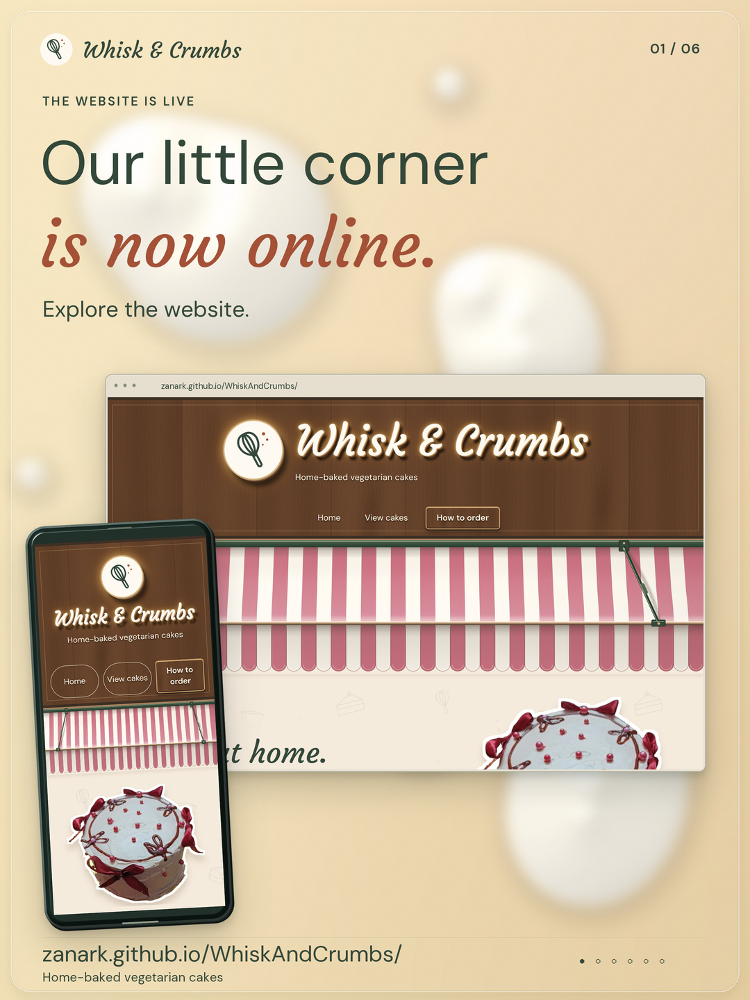

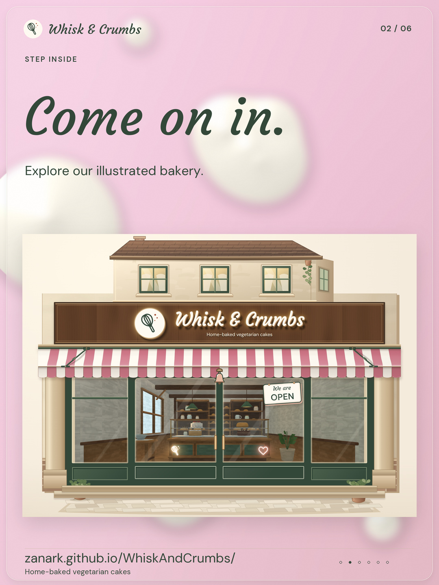

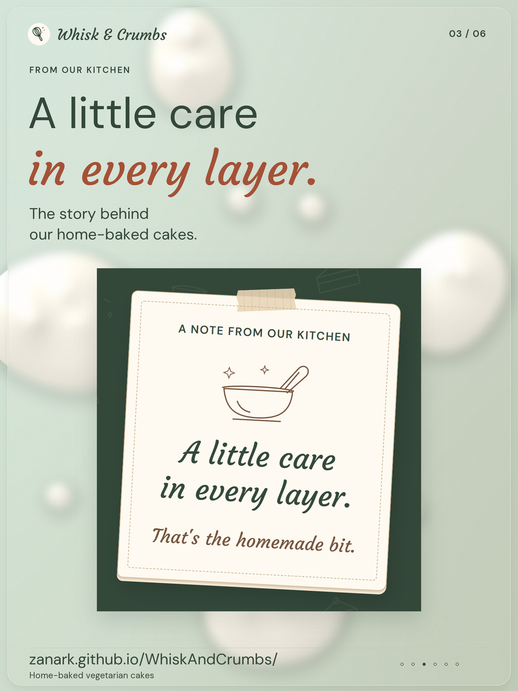

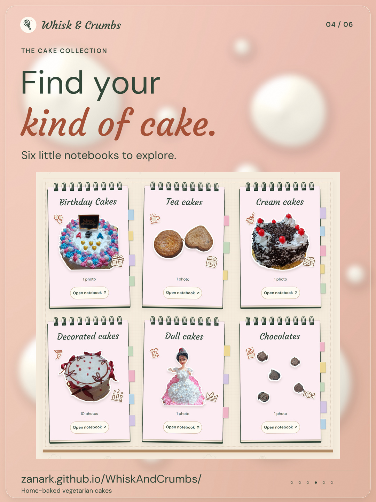

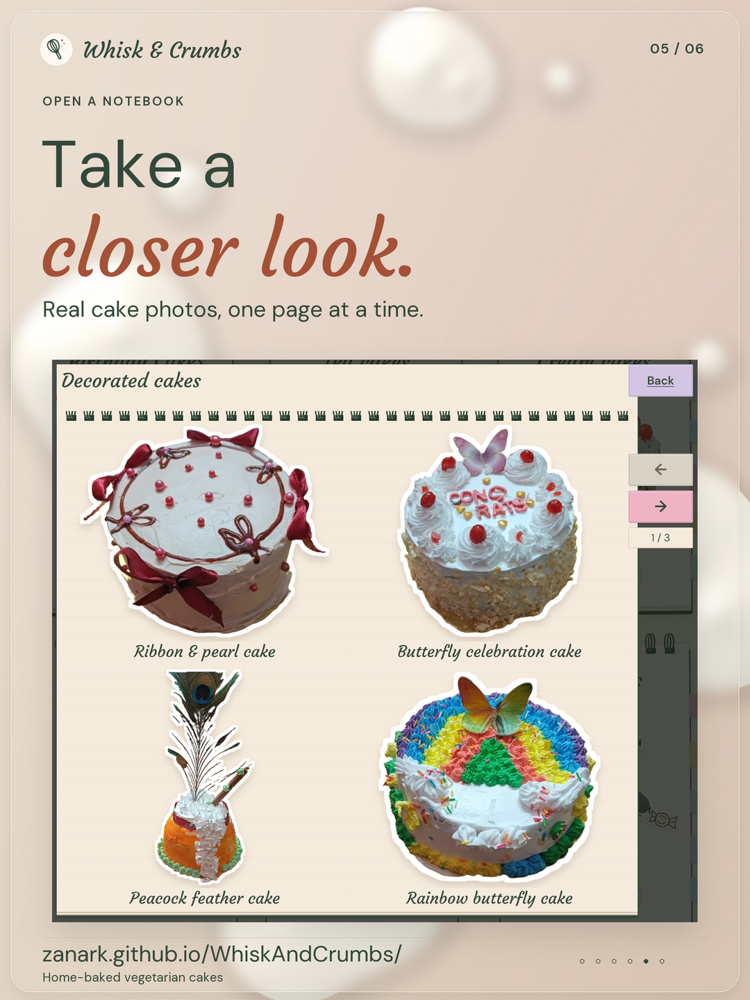

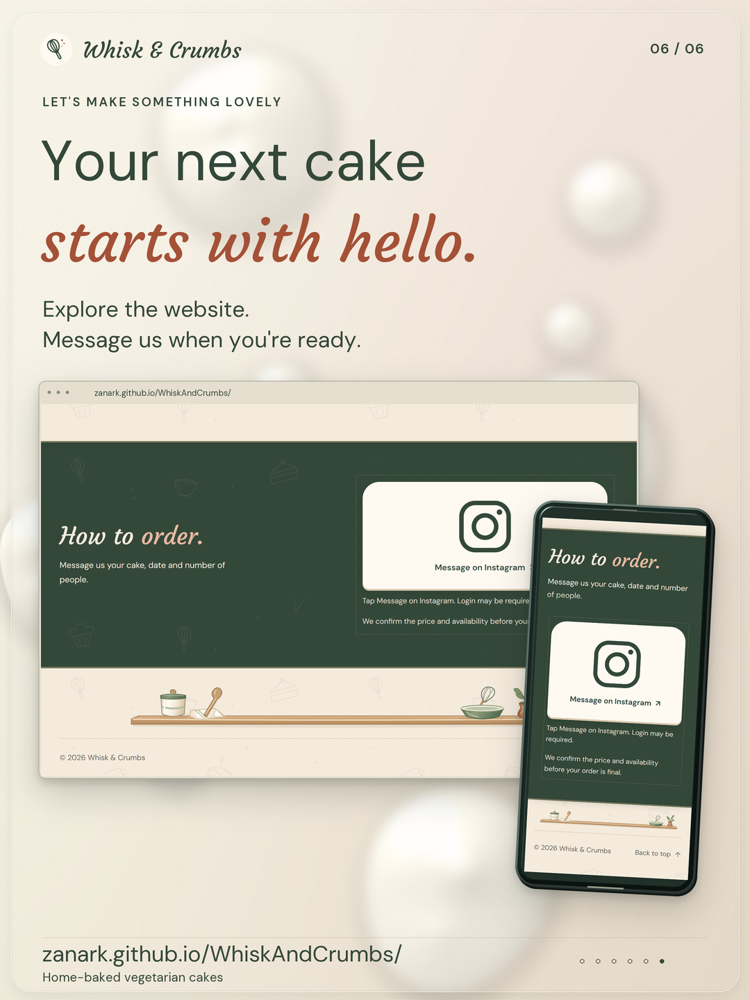
README - 1600 x 1000

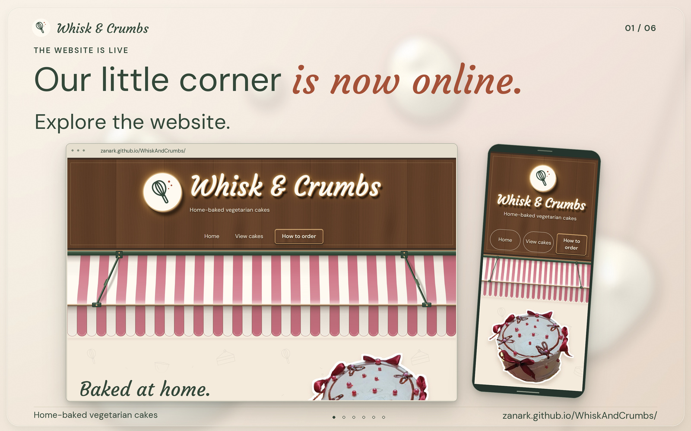

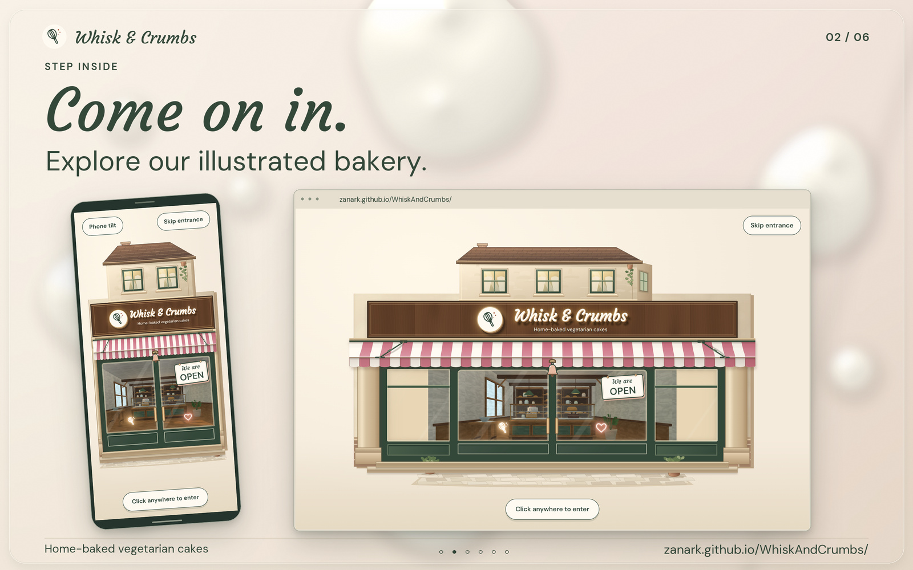

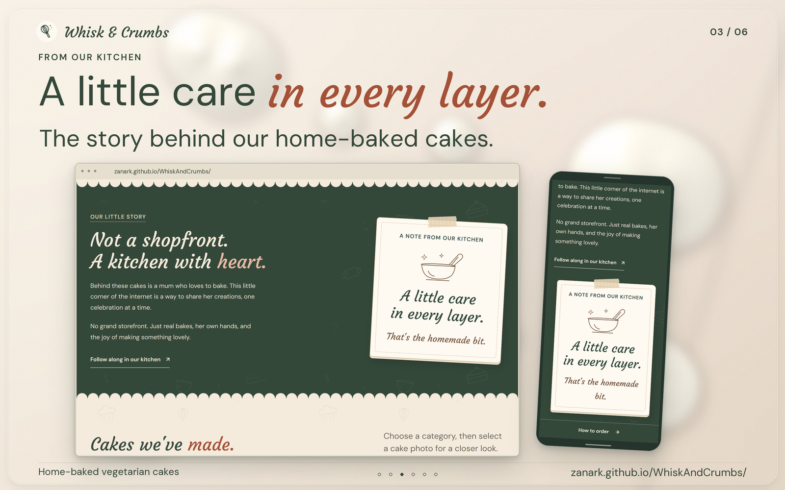

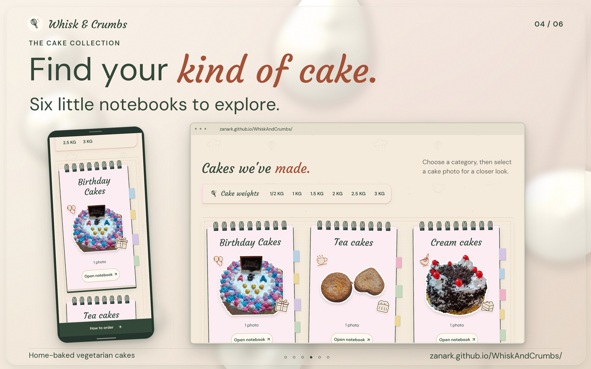

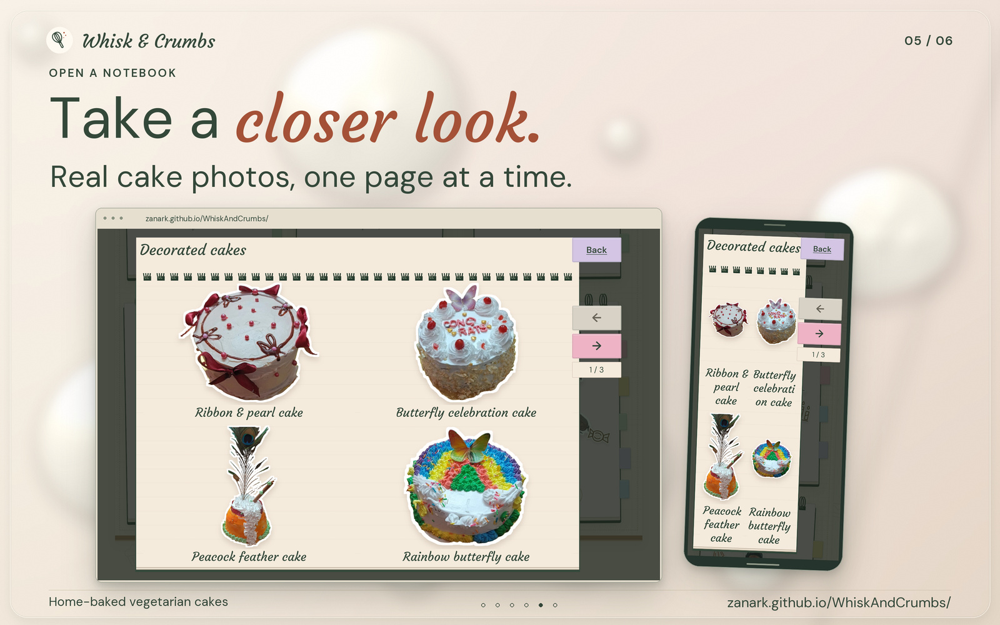

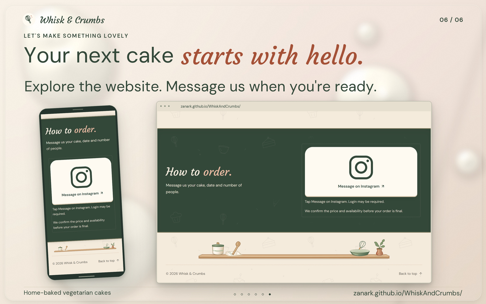
Nothing has been posted or scheduled on Instagram. The upload folder contains only the six numbered JPEGs. The images use the existing Whisk & Crumbs identity and verified website address, without assuming a new account handle.